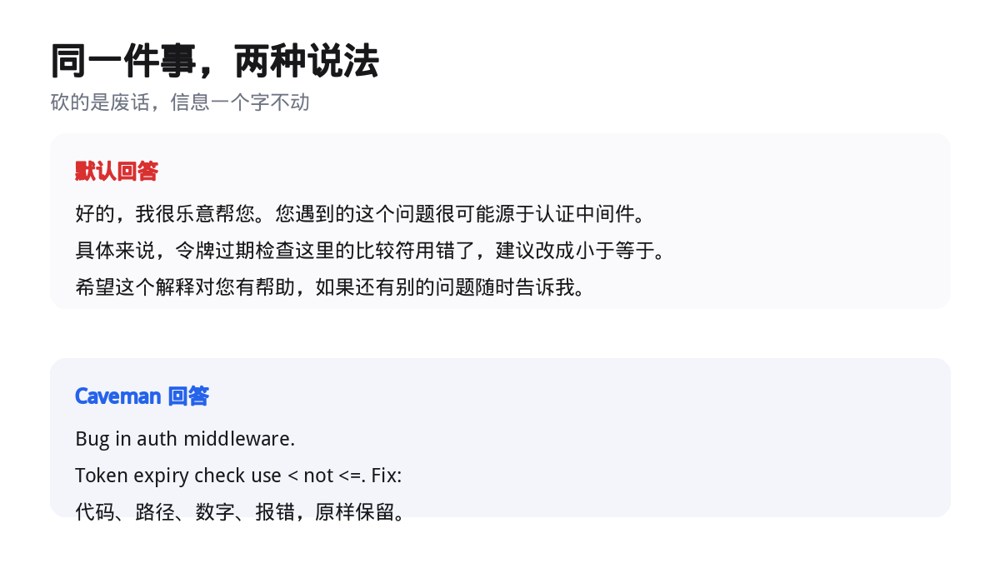

我最近在折腾一件有点抠门的事，省 token。
真不只是为了省钱。上下文一满，智能体就开始忘事、开始犯错，前面交代过的规矩它转头就不认。上下文窗口是它最金贵的资源，用光了就掉智商。
我把主打省 token 的插件和 skill 翻了一遍，挑出三款我觉得真能用的，配好给你。下面的命令我都对着各自官方文档核过一遍。
01
先搞清楚，token 花在哪
一次任务烧掉的 token，大致三个去向。
一个是读代码。为了看一个函数，它把整个文件读进上下文。仓库越大，这个洞越大。
一个是查文档。你把过时的文档贴进去，它照着旧版本给你写新代码。
还有一个最容易被忽略，是模型自己啰嗦。寒暄一句，把你的问题复述一遍，再顺手多加两层你根本没要的抽象。每一轮都重复一次。
省 token 的插件，基本都在堵这三个洞里的一个。
02
四款工具，各补一个洞
一句话过一下。Serena 管读代码，Context7 管查文档，claude-token-efficient 管模型输出，Caveman 两头都管一点。下面逐款给配置。
挑一个最痛的先装，不必四款全上。
03
第一款，让智能体按符号读代码
Serena 来自 oraios 团队，开源。核心思路一句话，别让智能体 grep 一处、再把整个文件读进来，让它像人用 IDE 一样，按符号定位。
同样改一个函数，两种读法差的是几百行上下文。
它底层跑的是真正的语言服务器，支持四十多种语言。找符号、看文件结构、找引用，全在符号这一层完成，不把整文件搬进上下文。
安装，前提只有一个 uv。
uv tool install -p 3.13 serena-agent
初始化。
serena init
接进 Claude Code，一行搞定。
serena setup claude-code
想手动控制，用这条给当前项目配。
claude mcp add serena -- serena start-mcp-server --context claude-code --project "$(pwd)"
想全局给所有项目用，加两个参数。装完敲 /mcp 确认连上。
claude mcp add --scope user serena -- serena start-mcp-server --context claude-code --project-from-cwd
官方还建议配一个 reminder 钩子，在它连续 grep 却不调用 Serena 工具时把它拽回来。这个钩子目前标着 alpha，介意的话先不装。
许可要提一句，Serena 的 SolidLSP 部分是 MIT，应用本体是 GPL-3.0-or-later，商用前留意。
04
第二款，用的时候才去拉文档
Context7 解决的是文档问题。你不贴文档，模型就凭记忆写，容易写出过时 API。你贴文档，又白白占一大块上下文。
它的做法是，用到的时候，现去拉。前提 Node 22.13 以上，一条命令配置。
npx ctx7 setup --claude
第一次运行它会问你选哪种模式，两种都有用。
一种是 MCP server。装好之后，智能体自己就能调 resolve-library-id 和 query-docs 两个工具，需要什么文档自己去查，你不用管。
另一种是 CLI + Skills。它不装 MCP，而是给你的智能体装一个 docs skill，让它走命令行去拉。
ctx7 setup --cli --claude
配好之后，你自己在终端也能直接查。先按名字找到库，再按问题拿文档。
ctx7 library prisma "如何定义带级联删除的一对多关系"
ctx7 docs /prisma/prisma "如何定义带级联删除的一对多关系"
文档不进上下文的前提，是用的时候它才进。这一条其实比省下的 token 更值钱，它顺手把「模型凭记忆瞎写老 API」这个坑也堵了。
05
第三款，一份文件管住啰嗦
claude-token-efficient 管的是模型自己的嘴。做法极简，就一个 CLAUDE.md 文件，丢进项目根目录。
curl -o CLAUDE.md https://raw.githubusercontent.com/drona23/claude-token-efficient/main/CLAUDE.md
它禁掉的那些毛病，你应该都眼熟。开头一句「好问题」，结尾一句「希望对你有帮助」，把你的问题原样复述一遍，用一堆破折号和智能引号，顺手加你没要的抽象，还有你明显说错了它仍然点头说对。
这些全是 token，全都不产生任何价值。
它给了一个我很欣赏的坦白。作者自己的 benchmark 里写着，词数掉得比 token 稳，短提示词上基本持平，想净省，得看你的输出量够不够大。
而且 CLAUDE.md 每一轮都要重新读进上下文，文件本身越长，反而越费。它自己就提醒，这个文件千万别写长。
省 token 的文件，自己先得短。
06
第四款，让智能体学原始人说话
最后一款画风不太一样，它叫 Caveman，翻过来就是山顶洞人。
思路直接到有点好笑，让智能体像原始人一样开口。仓库的口号是 why many token when few do trick，能用几个词说清的事，别用一整句。

同一件事，两种说法。数据、路径、报错一个字符都不动。
它 2026 年 4 月上线，本来是个玩笑，结果几天之内冲上 GitHub Trending 第一名，现在已经十万多颗星。
装法很简单。通用安装一行，支持 30 多款智能体。
npx skills add JuliusBrussee/caveman -g
Claude Code 插件，两行。
claude plugin marketplace add JuliusBrussee/caveman
claude plugin install caveman@caveman
用法就是在对话框里敲命令。不想用了，说一句 stop caveman 就回去。
/caveman 开启，温和档
/ultracave 更狠的一档
/megacave 文言文模式
/caveman status 查看当前档位
stop caveman 关掉
它不是把话说得没语法。规矩写得很死，先给答案再给理由，砍掉寒暄、铺垫和收尾，能短就短，一句话只装一个意思。
代码、命令、路径、报错，一个字符都不许改。安全警告、不可逆操作、需要你确认的步骤，它也会临时切回完整句子。
它砍的是废话，不是信息。一个漏掉的 not，比省下的所有 token 都贵。
顺手它还做了几件事。/caveman-commit 生成一行提交信息，/caveman-review 一行一条审查意见，/caveman-compress 专门压缩 CLAUDE.md 这类记忆文件。
数字我照抄，不往大了说。在十个开发问题上，不设指令是 6983 个输出 token，加一句「回答简洁点」降到 4334，再叠上 /caveman 是 4119，换成 /ultracave 直接到 2693。真正省下来的那部分，主要靠更狠的那一档。
它还有一层叫 proxy，管的是智能体读进来的东西。日志、CSV、JSON、测试输出，过一遍能小掉 98.5% 到 99.1%，整场会话的输入 token 少 33.2%。
JetBrains 拿 86 个真实任务做过 A/B，结论是没有可测的质量损失，输出 token 少 8.5%。注意这个数字，比宣传里那个 75% 克制得多。
最后留一句它自己的提醒。Caveman 的规则本身大约有 1160 个 token，每一轮都会跟着走。你要按次计费，比如 Copilot 的高级请求，回答短了价钱也一样，这款就别装了。
07
还有几件事，不装插件也能做
Claude Code 官方文档里，还有一批白送的省法。
用钩子先过滤。拿日志举例，别让模型去读一份一万行的日志，用一个钩子先把 ERROR 挑出来，只把命中行交给它。上下文能从几万 token 掉到几百。
用 skill 预置领域知识。写一个 codebase-overview 的 skill，把架构、关键目录、命名约定写进去。模型一调用就拿到，不用满仓库乱翻去理解结构。
切换任务就敲 /clear。别让上一摊无关内容一直跟着后面每一轮。
提文件用 @ 挂上去。别光报个文件名让它自己去找，那又是一轮搜索。
模型和思考档位开工前定好。中途改会打爆提示缓存，本来想省，结果更贵。
用 /mcp 关掉这次用不到的 MCP 服务。关掉的服务器，花的 token 是零，这是投入产出最高的一步。
说了这么多工具，我想把一句更要紧的放在最后。
上下文不是内存条，它更像一张工作台。桌面上堆的东西越多，你越难找到要用的那一件。
省 token 省到最后，省的不是钱，是让智能体始终待在清醒的那一段里。
桌面上只留这次要用的东西，它才不容易犯错。
Serena · Context7 · claude-token-efficient · Caveman
四款都开源，命令取自各自官方文档。前两款装完记得敲 /mcp 确认连接。